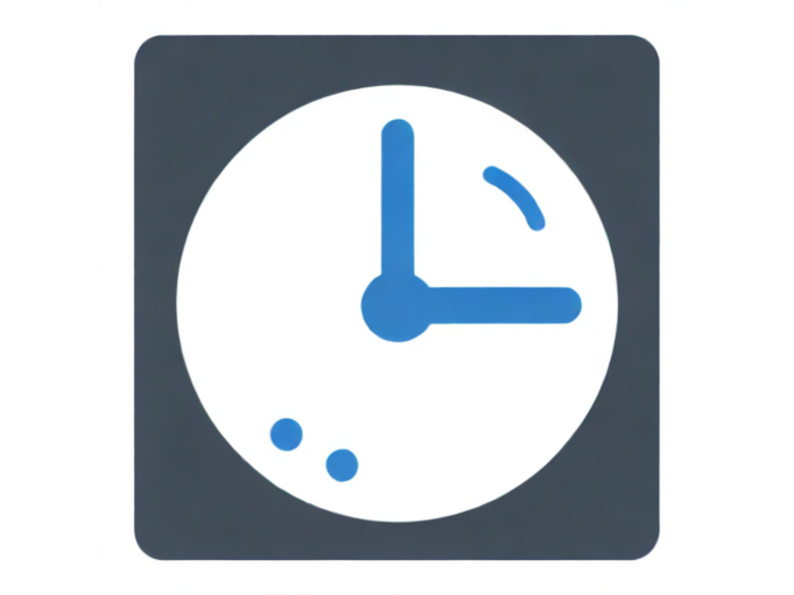

Únete a nuestra CLASE EN VIVO GRATUITA y aprende cómo aplicar la IA para captar la atención de tus alumnos y revolucionar tu enseñanza.
Quiero acceder a la clase GRATIS
Recibe los detalles completos en nuestro grupo de WhatsApp exclusivo.
¿Qué aprenderás en esta clase gratuita?
Temas clave del webinar
Herramientas Creativas para Docentes con IA
Descubre cómo la IA puede transformar tus espacios académicos, haciendo que la enseñanza sea más dinámica y efectiva.

Inteligencia Artificial Generativa
Aprende sobre la IA generativa y cómo puede ayudarte a crear contenido único y atractivo en tus clases.

Optimización y Eficiencia en el Uso de IA
Veremos cómo la IA puede agilizar tareas como la documentación, la organización de clases y la evaluación.
Ética y Seguridad en el Uso de IA
Hablaremos sobre los riesgos éticos relacionados con la IA, incluyendo la clonación de voces y la seguridad en el aula.
Esto es lo que opinan quienes ya asistieron a la clase
"Me sentía abrumada por la tecnología, pero después de esta clase, sé que es posible que mis lecciones sean más atractivas y mis alumnos estén más motivados."
María G.
"Nunca pensé que podría integrar la IA en mis clases tan fácilmente. Esta clase en vivo me dio la confianza que necesitaba."
Carlos R.
"Después de esta clase, me di cuenta de que puedo integrar la IA en mis clases. Si aplico lo aprendido, sé que puedo transformar la forma en que enseño."
Lucía M.
Sobre tu instructor, Helman Carrillo

Economista y Magíster en Intervención Social, Helman tiene más de 10 años de experiencia en educación e innovación tecnológica.
Ha capacitado a docentes y profesionales para integrar la IA en sus prácticas educativas. En esta clase, te guiará paso a paso para que también puedas aprovechar estas herramientas en tu aula.
Por tiempo limitado: Regístrate en las próximas:
y obtén acceso exclusivo a material adicional de IA, esencial para aprovechar al máximo nuestra primera clase.
Accede a la clase GRATIS ahora
Este es el primer paso para transformar tu enseñanza y llevar a tus alumnos al siguiente nivel. No dejes pasar esta oportunidad para lograr la conexión que siempre has deseado con tus estudiantes, y conviértete en el docente innovador que tanto anhelas ser.